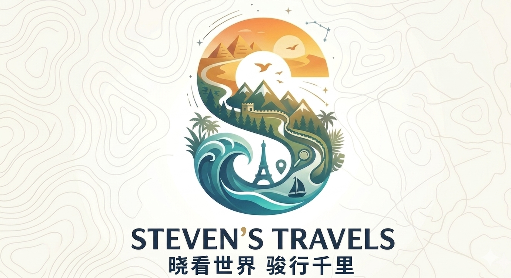

<!DOCTYPE html>
<html lang="zh-CN">
<head>
  <meta charset="UTF-8">
  <meta name="viewport" content="width=device-width, initial-scale=1.0">
  <title>关于 | Steven环球旅行</title>
  <link rel="icon" href="images/logo-icon.png">
  <link rel="apple-touch-icon" href="images/logo-icon.png">
  <!-- Google tag (gtag.js) -->
  <script async src="https://www.googletagmanager.com/gtag/js?id=G-HJWRL0D0HH"></script>
  <script>
    window.dataLayer = window.dataLayer || [];
    function gtag(){dataLayer.push(arguments);}
    gtag('js', new Date());
    gtag('config', 'G-HJWRL0D0HH');
  </script>
  <link rel="preconnect" href="https://fonts.googleapis.com">
  <link rel="preconnect" href="https://fonts.gstatic.com" crossorigin>
  <link href="https://fonts.googleapis.com/css2?family=Noto+Sans+SC:wght@400;600;700;800&display=swap" rel="stylesheet">
  <link rel="stylesheet" href="css/style.css">
  <script>!function(){var t=localStorage.getItem('sv-theme'),p=localStorage.getItem('sv-palette');document.documentElement.setAttribute('data-theme',t==='dark'?'dark':t==='light'?'light':window.matchMedia('(prefers-color-scheme:dark)').matches?'dark':'light');if(p&&p!=='blue')document.documentElement.setAttribute('data-palette',p)}();</script>
</head>
<body data-page="about">

  <div id="site-header"></div>

  <main>
    <div id="about-content"></div>
  </main>

  <div id="site-footer"></div>

  <script src="data/index.js"></script>
  <script src="data/coords.js"></script>
  <script src="js/app.js"></script>
  <script>
  document.addEventListener('DOMContentLoaded', () => {
    const zh = localStorage.getItem('sv-lang') !== 'en';
    document.getElementById('about-content').innerHTML = zh ? `
      <div class="about-section">
        
        <h1>关于本站</h1>
        <p style="color:#64748b;font-size:.95rem">一个热爱旅行与地理的独立站点</p>

        <h2>🌍 网站简介</h2>
        <p>欢迎来到 <strong>Steven World Travel</strong>！本站致力于系统性地介绍全球六大洲的国家，
        涵盖地理、历史、经济、人口与文化五大维度，并精选世界各地最具代表性的旅游景点，
        每个景点均标注于互动地图上。</p>
        <p>所有内容以简体中文为主并提供英文版本，力求让更多人了解和爱上这个多姿多彩的地球。</p>

        <h2>📖 关于作者</h2>
        <p>你好，我是 <strong>Steven</strong>，一名热爱旅行、地理和文化的探索者。
        旅行让我意识到，这个世界远比我们想象中更广阔、更精彩。
        我希望通过这个网站，把对世界的热情与好奇分享给每一位访客。</p>
        <p>📧 <a href="mailto:voyagerzxj@gmail.com" style="color:#1d4ed8">voyagerzxj@gmail.com</a></p>

        <h2>🛠️ 技术说明</h2>
        <p>本站为纯静态网站，托管于 GitHub Pages，无需后端服务器。
        数据按国家拆分存储：<code>data/countries/{id}.json</code>（国家详情）、
        <code>data/destinations/{id}.json</code>（景点列表），导航索引由
        <code>data/index.json</code> 维护，运行 <code>python convert.py</code>
        可将其转换为 JS 全局变量。
        地图由 <a href="https://leafletjs.com" target="_blank" style="color:#1d4ed8">Leaflet</a>
        + OpenStreetMap 提供（无需 API Key），世界地图使用 TopoJSON 绘制国家轮廓。</p>
        <p>技术栈：HTML5 · CSS3 · 原生 JavaScript · Leaflet · TopoJSON · JSON数据</p>

        <h2>🖼️ 如何导入自定义景点图片</h2>
        <p>目前所有景点图片来自 <a href="https://picsum.photos" target="_blank" style="color:#1d4ed8">Picsum Photos</a>（随机占位图）。替换为真实图片的步骤：</p>
        <ol style="padding-left:1.5rem;color:#1e293b;line-height:2">
          <li>在项目根目录创建文件夹 <code>images/destinations/{国家id}/</code>，例如 <code>images/destinations/albania/</code></li>
          <li>将图片文件放入该目录，命名建议与景点 id 保持一致，例如 <code>berat.jpg</code></li>
          <li>打开对应的景点 JSON 文件，例如 <code>data/destinations/albania.json</code></li>
          <li>将该景点的 <code>"image"</code> 字段从 <code>"https://picsum.photos/..."</code> 改为 <code>"images/destinations/albania/berat.jpg"</code></li>
          <li>保存文件后刷新浏览器即可（不需要运行任何脚本）</li>
        </ol>
        <p style="color:#64748b;font-size:.9rem">💡 提示：JSON 文件可直接编辑，无需运行 convert.py；只有修改 <code>data/index.json</code>（国家名称、封面图、简介等导航信息）时才需要重新运行 convert.py。</p>

        <h2>📚 参考资料来源</h2>
        <p>本站内容在创作过程中参考了以下优质资料，感谢这些创作者与机构的无私分享。</p>
        <div class="ref-grid">
          <a class="ref-card" href="https://www.youtube.com/@GeographyNow" target="_blank" rel="noopener">
            <div class="ref-card-icon">🎬</div>
            <div class="ref-card-body">
              <div class="ref-card-name">Geography Now</div>
              <div class="ref-card-desc">YouTube地理频道，以轻松幽默的方式逐国介绍全球地理、文化与趣闻，是本站地理内容的重要灵感来源。</div>
            </div>
            <span class="ref-card-tag">YouTube</span>
          </a>
          <a class="ref-card" href="https://space.bilibili.com/37974444" target="_blank" rel="noopener">
            <div class="ref-card-icon">🗺️</div>
            <div class="ref-card-body">
              <div class="ref-card-name">冒险雷探长</div>
              <div class="ref-card-desc">中文旅行探索频道，深入走访全球各地，真实记录当地风土人情与文化面貌，视角独特、内容扎实。</div>
            </div>
            <span class="ref-card-tag">Bilibili</span>
          </a>
          <a class="ref-card" href="https://whc.unesco.org" target="_blank" rel="noopener">
            <div class="ref-card-icon">🏛️</div>
            <div class="ref-card-body">
              <div class="ref-card-name">UNESCO 世界遗产</div>
              <div class="ref-card-desc">联合国教科文组织世界遗产官方数据库，提供全球遗产地的权威信息与评价标准，是景点内容的重要参考。</div>
            </div>
            <span class="ref-card-tag">UNESCO</span>
          </a>
          <a class="ref-card" href="https://www.globalgeoparksnetwork.org" target="_blank" rel="noopener">
            <div class="ref-card-icon">🪨</div>
            <div class="ref-card-body">
              <div class="ref-card-name">世界地质公园网络</div>
              <div class="ref-card-desc">UNESCO全球地质公园网络，涵盖全球具有地质、生态与文化价值的地质公园信息与研究资料。</div>
            </div>
            <span class="ref-card-tag">GGN</span>
          </a>
        </div>

        <h2>📄 版权声明</h2>
        <p>本站原创内容采用
        <a href="https://creativecommons.org/licenses/by-nc-sa/4.0/deed.zh" target="_blank" style="color:#1d4ed8">CC BY-NC-SA 4.0</a>
        协议许可。景点图片来自
        <a href="https://picsum.photos" target="_blank" style="color:#1d4ed8">Picsum Photos</a>，
        地图数据 © <a href="https://www.openstreetmap.org/copyright" target="_blank" style="color:#1d4ed8">OpenStreetMap</a> 贡献者。</p>
      </div>` : `
      <div class="about-section">
        
        <h1>About This Site</h1>
        <p style="color:#64748b;font-size:.95rem">An independent site for travel and geography enthusiasts</p>

        <h2>🌍 About the Site</h2>
        <p>Welcome to <strong>Steven World Travel</strong>! This site covers countries across all six continents,
        exploring geography, history, economy, demographics and culture, and curating iconic tourist destinations
        — each pinned on an interactive map.</p>
        <p>All content is in Simplified Chinese (default) with an English toggle.</p>

        <h2>📖 About the Author</h2>
        <p>Hi, I'm <strong>Steven</strong>, passionate about travel, geography and world cultures.
        Through this site I hope to share my curiosity about the world with every visitor.</p>
        <p>📧 <a href="mailto:voyagerzxj@gmail.com" style="color:#1d4ed8">voyagerzxj@gmail.com</a></p>

        <h2>🛠️ Technical Notes</h2>
        <p>A fully static website on GitHub Pages. Data is split per country:
        <code>data/countries/{id}.json</code> (country detail) and
        <code>data/destinations/{id}.json</code> (destination lists).
        The navigation index lives in <code>data/index.json</code>; run
        <code>python convert.py</code> to regenerate <code>data/index.js</code>.
        Maps powered by <a href="https://leafletjs.com" target="_blank" style="color:#1d4ed8">Leaflet</a>
        + OpenStreetMap (no API key required). World map uses TopoJSON country polygons.</p>
        <p>Stack: HTML5 · CSS3 · Vanilla JS · Leaflet · TopoJSON · JSON data</p>

        <h2>🖼️ How to Add Custom Destination Images</h2>
        <p>Currently all images use <a href="https://picsum.photos" target="_blank" style="color:#1d4ed8">Picsum Photos</a> placeholders. To replace them:</p>
        <ol style="padding-left:1.5rem;color:#1e293b;line-height:2">
          <li>Create <code>images/destinations/{country-id}/</code>, e.g. <code>images/destinations/albania/</code></li>
          <li>Place image files there, named after the destination id, e.g. <code>berat.jpg</code></li>
          <li>Open the destination JSON file, e.g. <code>data/destinations/albania.json</code></li>
          <li>Change the <code>"image"</code> field from <code>"https://picsum.photos/..."</code> to <code>"images/destinations/albania/berat.jpg"</code></li>
          <li>Save and refresh — no script needed</li>
        </ol>
        <p style="color:#64748b;font-size:.9rem">💡 Tip: destination JSON files can be edited directly without running any script. Only <code>data/index.json</code> changes (country names, cover images, briefs) require re-running <code>python convert.py</code>.</p>

        <h2>📚 References & Sources</h2>
        <p>The following resources informed the content on this site. Thanks to all creators and institutions for sharing their knowledge.</p>
        <div class="ref-grid">
          <a class="ref-card" href="https://www.youtube.com/@GeographyNow" target="_blank" rel="noopener">
            <div class="ref-card-icon">🎬</div>
            <div class="ref-card-body">
              <div class="ref-card-name">Geography Now</div>
              <div class="ref-card-desc">A YouTube channel covering every country on Earth with engaging geography, culture and trivia — a key inspiration for this site.</div>
            </div>
            <span class="ref-card-tag">YouTube</span>
          </a>
          <a class="ref-card" href="https://space.bilibili.com/37974444" target="_blank" rel="noopener">
            <div class="ref-card-icon">🗺️</div>
            <div class="ref-card-body">
              <div class="ref-card-name">冒险雷探长</div>
              <div class="ref-card-desc">A Chinese travel documentary channel exploring countries worldwide, offering authentic ground-level perspectives on local life and culture.</div>
            </div>
            <span class="ref-card-tag">Bilibili</span>
          </a>
          <a class="ref-card" href="https://whc.unesco.org" target="_blank" rel="noopener">
            <div class="ref-card-icon">🏛️</div>
            <div class="ref-card-body">
              <div class="ref-card-name">UNESCO World Heritage</div>
              <div class="ref-card-desc">The official UNESCO World Heritage database — authoritative information on heritage sites, criteria and conservation status worldwide.</div>
            </div>
            <span class="ref-card-tag">UNESCO</span>
          </a>
          <a class="ref-card" href="https://www.globalgeoparksnetwork.org" target="_blank" rel="noopener">
            <div class="ref-card-icon">🪨</div>
            <div class="ref-card-body">
              <div class="ref-card-name">Global Geoparks Network</div>
              <div class="ref-card-desc">The UNESCO Global Geoparks Network, covering geoparks of outstanding geological, ecological and cultural significance worldwide.</div>
            </div>
            <span class="ref-card-tag">GGN</span>
          </a>
        </div>

        <h2>📄 License</h2>
        <p>Original content licensed under
        <a href="https://creativecommons.org/licenses/by-nc-sa/4.0/" target="_blank" style="color:#1d4ed8">CC BY-NC-SA 4.0</a>.
        Images from <a href="https://picsum.photos" target="_blank" style="color:#1d4ed8">Picsum Photos</a>.
        Map data © <a href="https://www.openstreetmap.org/copyright" target="_blank" style="color:#1d4ed8">OpenStreetMap</a> contributors.</p>
      </div>`;
  });
  </script>
</body>
</html>
